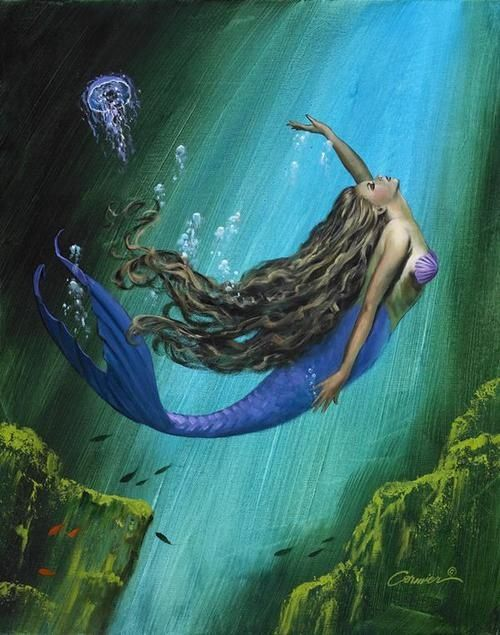
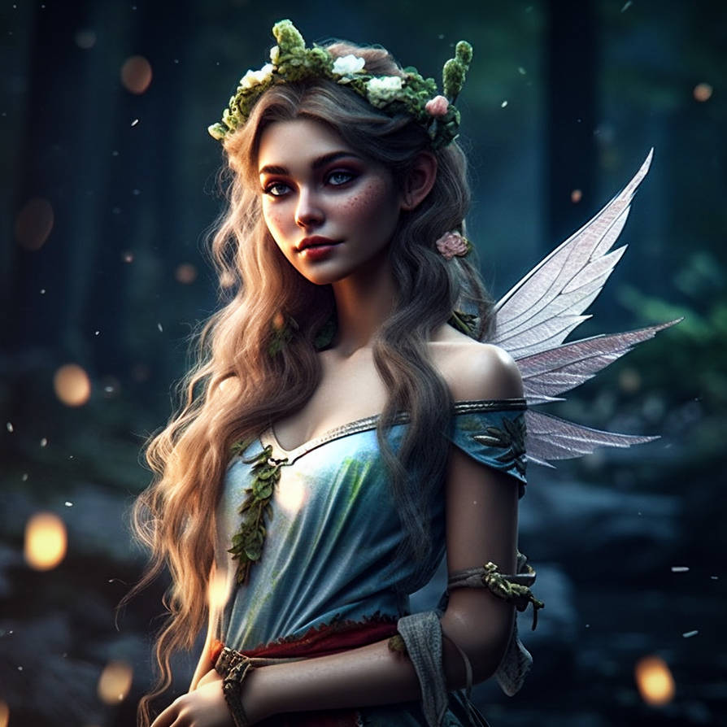
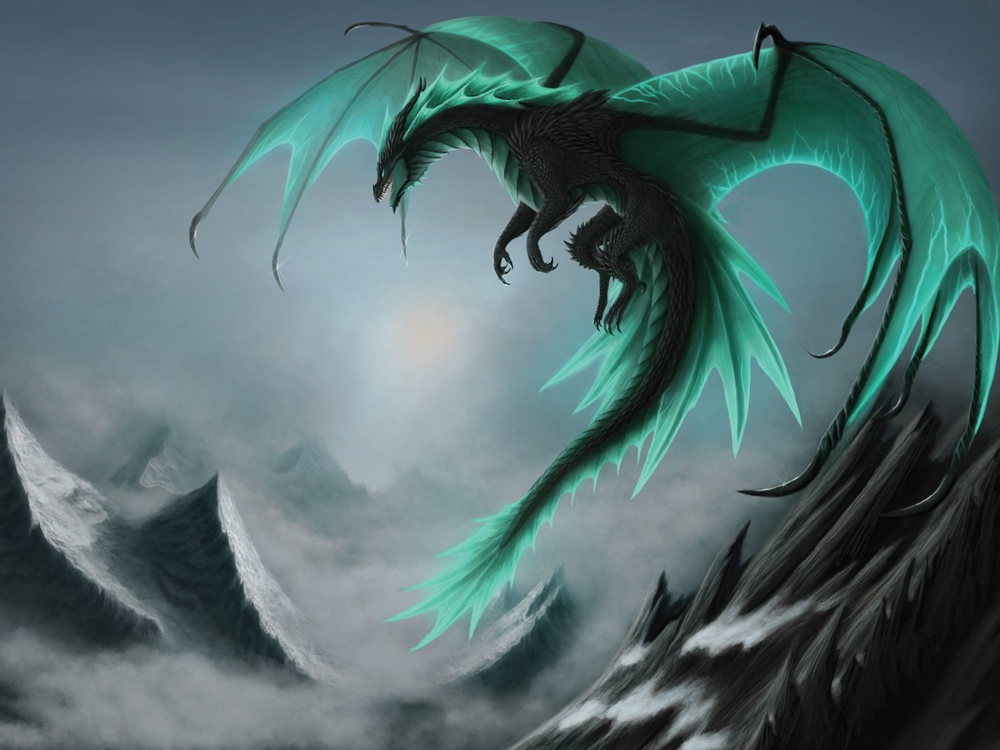
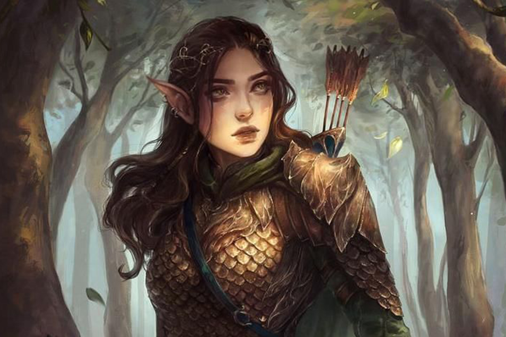
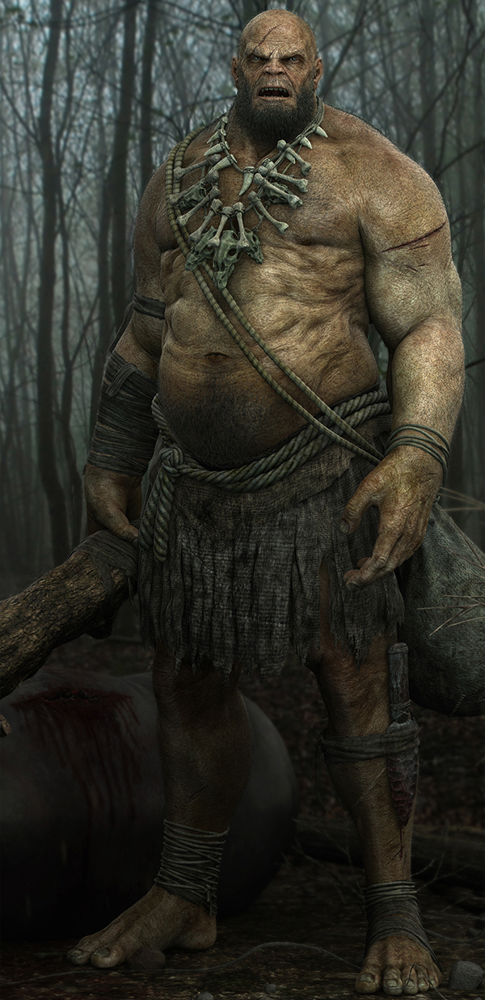
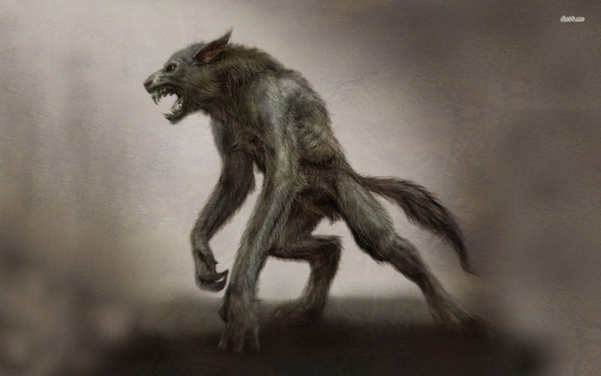
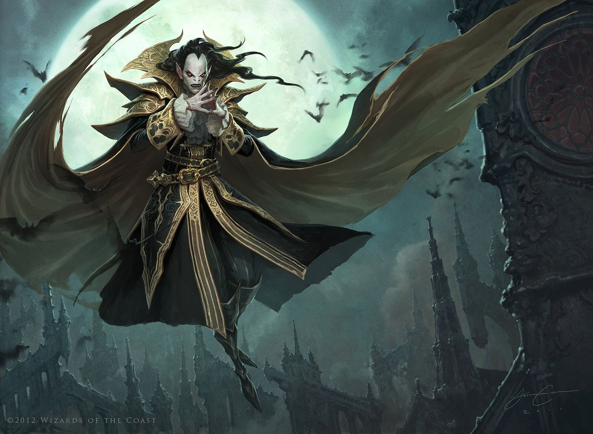

-A fairy tale (alternative names include fairytale, fairy story, magic tale, or wonder tale) is a short story that belongs to the folklore genre. Such stories typically feature magic, enchantments, and mythical or fanciful beings. In most cultures, there is no clear line separating myth from folk or fairy tale; all these together form the literature of preliterate societies. Fairy tales may be distinguished from other folk narratives such as legends (which generally involve belief in the veracity of the events described) and explicit moral tales, including beast fables. Prevalent elements include dwarfs, dragons, elves, fairies, giants, gnomes, goblins, griffins, mermaids, talking animals, trolls, unicorns, monsters, witches, wizards, and magic and enchantments.
| MERMAID | FAIRY | DRAGON | ELF | GIANT | WEREWOLF | VAMPIRE |
| a mermaid is
an aquatic creature with the head and upper body of a female human
and the tail of a fish.[1] Mermaids
appear in the folklore of many cultures worldwide, including
Europe, Asia, and Africa. Mermaids are sometimes associated with perilous events such as floods, storms, shipwrecks, and drownings. In other folk traditions (or sometimes within the same traditions), they can be benevolent or beneficent, bestowing boons or falling in love with humans. |
A fairy (also fay, fae, fey, fair
folk,
or faerie)
is a type of mythical being
or legendary
creature found
in the folklore of
multiple European cultures (including Celtic, Slavic, Germanic,
and French folklore),
a form of spirit,
often described as metaphysical, supernatural,
or preternatural. Myths and stories about fairies do not have a single origin, but are rather a collection of folk beliefs from disparate sources. Various folk theories about the origins of fairies include casting them as either demoted angels or demons in a Christian tradition, as deities in Pagan belief systems, as spirits of the dead, as prehistoric precursors to humans, or as spirits of nature. |
A dragon is a large magical legendary creature that appears in the folklore of many cultures worldwide. Beliefs about dragons vary considerably through regions, but dragons in western cultures since the High Middle Ages have often been depicted as winged, horned, and capable of breathing fire. Dragons in eastern cultures are usually depicted as wingless, four-legged, serpentine creatures with above-average intelligence. Commonalities between dragons' traits are often a hybridization of feline, reptilian, mammal, and avian features. Scholars believe vast extinct or migrating crocodiles bear the closest resemblance, especially when encountered in forested or swampy areas, and are most likely the template of modern Oriental dragon imagery.[1][2] | An elf (pl: elves)
is a type of humanoid supernatural being
in Germanic folklore.
Elves appear especially in North
Germanic mythology,
being mentioned in the Icelandic Poetic
Edda and Snorri
Sturluson's Prose
Edda. In medieval Germanic-speaking cultures, elves generally seem to have been thought of as beings with magical powers and supernatural beauty, ambivalent towards everyday people and capable of either helping or hindering them.[1] However, the details of these beliefs have varied considerably over time and space and have flourished in both pre-Christian and Christian cultures. |
giants (from Ancient Greek: gigas, cognate giga-) are beings of humanoid appearance, but are at times prodigious in size and strength or bear an otherwise notable appearance. The word giant is first attested in 1297 from Robert of Gloucester's chronicle.[1] It is derived from the Gigantes (Greek: Γίγαντες[2]) of Greek mythology. | a werewolf[a] (from Old English werwulf 'man-wolf'), or occasionally lycanthrope[b] (from Ancient Greek λυκάνθρωπος, lukánthrōpos, 'wolf-human') is an individual who can shape-shift into a wolf (or, especially in modern film, a therianthropic hybrid wolf-like creature), either purposely or after being placed under a curse or affliction (often a bite or the occasional scratch from another werewolf), with the transformations occurring on the night of a full moon.[c] Early sources for belief in this ability or affliction, called lycanthropy,[d] are Petronius (27–66) and Gervase of Tilbury (1150–1228). | A vampire is a mythical creature that subsists by feeding on the vital essence (generally in the form of blood) of the living. In European folklore, vampires are undead creatures that often visited loved ones and caused mischief or deaths in the neighbourhoods which they inhabited while they were alive. They wore shrouds and were often described as bloated and of ruddy or dark countenance, markedly different from today's gaunt, pale vampire which dates from the early 19th century. Vampiric entities have been recorded in cultures around the world; the term vampire was popularized in Western Europe after reports of an 18th-century mass hysteria of a pre-existing folk belief in Southeastern and Eastern Europe that in some cases resulted in corpses being staked and people being accused of vampirism. Local variants in Southeastern Europe were also known by different names, such as shtriga in Albania, vrykolakas in Greece and strigoi in Romania. |
|  |
 |
 |
 |
 |
 |
 |